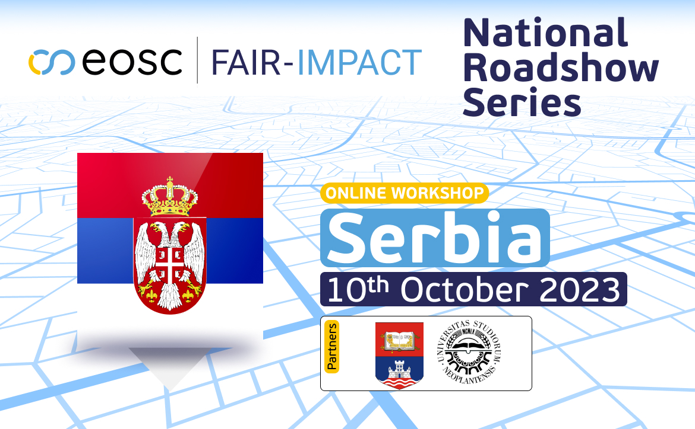

U okviru serije FAIR National Roadshow događaja koje organizuje projekat FAIR-Impact, 10. oktobra 2023. godine, od 11.00 do 13.00 časova, biće organizovan skup pod nazivom
Research Assessment and Open Science practices in Serbia
(Vrednovanje istraživanja i prakse otvorene nauke u Srbiji)
Učešće je besplatno, ali je registracija neophodna. Registracija se može obaviti putem linka:
Skup se održava na Zoom platformi, na engleskom jeziku, a pristupni link ćete dobiti nakon registracije. Skrećemo pažnju da registracija zahteva kreiranje naloga na FAIR-Impact platformi.
Na skupu će se raspravljati o statusu otvorene nauke u Srbiji u praksi oslanjajući se na aktuelne inicijative i procenjujući izazove kojima će se istraživačka zajednica u Srbiji tek baviti.
Ciljna publika su istraživači, rektori i donosioci odluka u Srbiji.